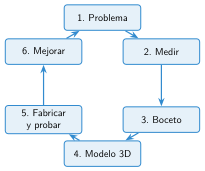
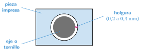

Diseñar piezas para un robot
🤔 Pienso5 min
Qué hago aquí: Piensa un momento y contesta con lo que ya sabes. No pasa nada si no lo sabes: es para empezar.
Un tornillo mide 3 mm de grueso. ¿Harías el agujero de 2,5 mm, de 3 mm o de 3,4 mm? ¿Por qué?
📖 Leo y aprendo15 min
Qué hago aquí: Lee despacio, mira los dibujos y los ejemplos, y quédate con la idea clave del final.
Una pieza para el robot tiene que encajar . Por eso se diseña siguiendo unos pasos.

Para medir piezas pequeñas se usa el calibre. Mide con mucha precisión: hasta una décima de milímetro.

✏️ Hago25 min
Qué hago aquí: Haz las actividades en orden. Empieza siempre por las básicas.
Ordena las fases del diseño escribiendo 1, 2, 3...
- Medir
- Mejorar
- Problema
- Modelo 3D
- Boceto
- Fabricar y probar
Completa: la es el pequeño espacio entre dos piezas para que encajen.
Calcula el agujero con 0,4 mm de holgura.
- Tornillo de 4 mm:
- Eje de 5 mm:
Mide el sensor de distancia del robot: largo y ancho de la placa. Dibuja un boceto a mano con las medidas.
✏️ Puedes responder escribiendo, con un dibujo o un esquema, o contándolo en voz alta.
Se ha perdido la tapa de las pilas. El hueco mide 52 × 30 mm. Con 0,3 mm de holgura por cada lado, ¿qué medidas tiene la tapa? Haz la tapa en Tinkercad con 2 mm de alto.
🚀 Amplío (si quieres saber más)
Qué hago aquí: ¿Has terminado? Lee la curiosidad o elige el reto. Es voluntario.
Sigue el paso a paso del final de la unidad y empieza el soporte para el sensor de distancia con tus medidas.
✅ Compruebo5 min
Qué hago aquí: Contesta sin mirar la ficha y marca cómo lo llevas.